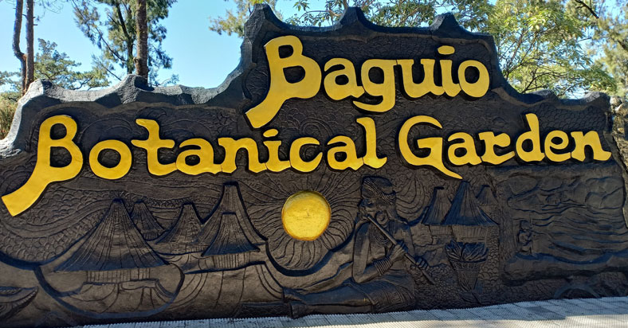
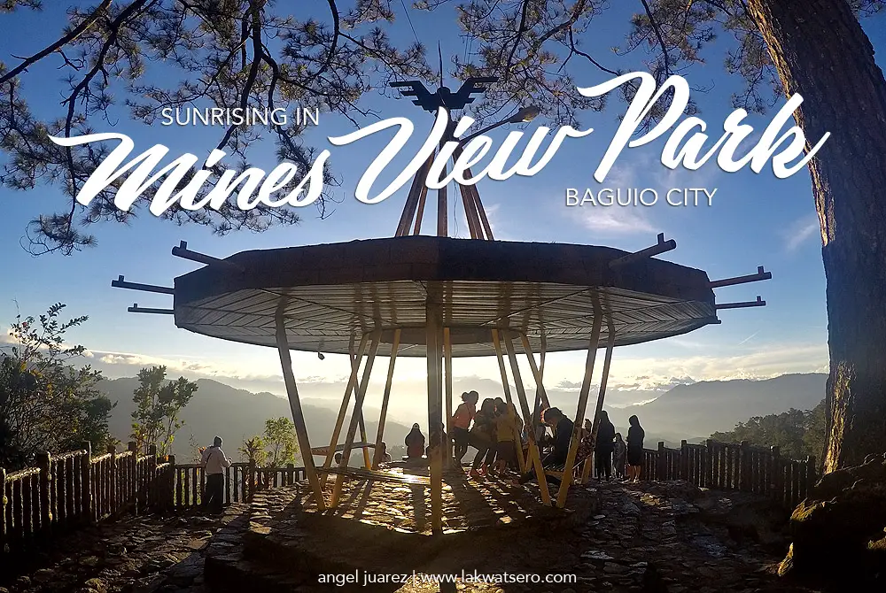
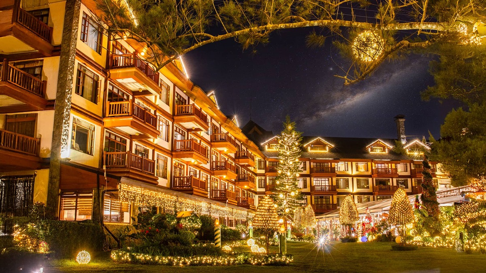
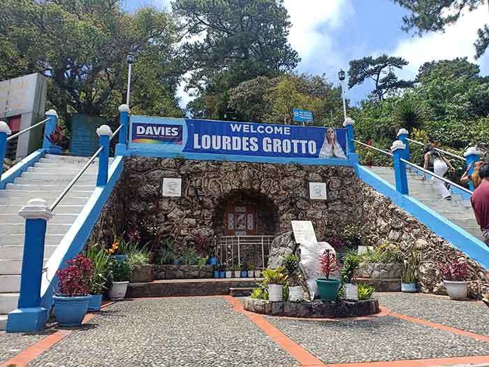
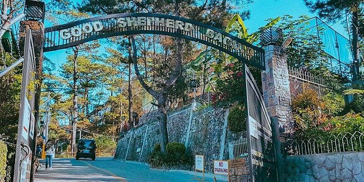
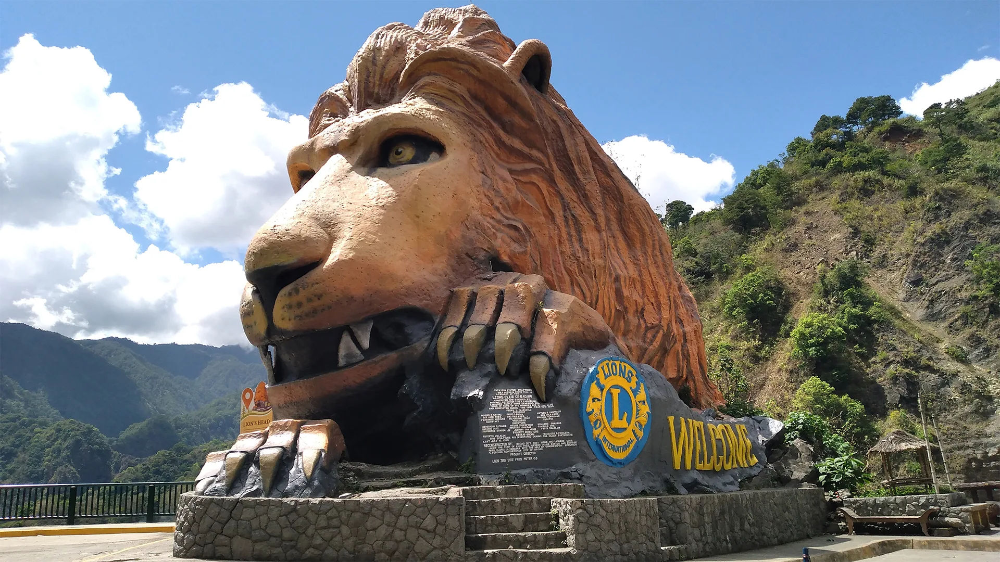
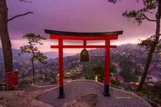

Discover top destinations and hidden gems in the City of Pines.
← Back to Home
A peaceful green sanctuary filled with plants and art.

Breathtaking views of mountains and old mining town.

Official summer residence of the Philippine President.

Pine forests, cafes, trails, and nature experiences.

Statue of the Virgin Mary atop 252 steps with views.

Home of famous Ube Jam with a scenic view.

Iconic landmark symbolizing the gateway to Baguio.

Torii gate, sunset views, and peaceful gardens.